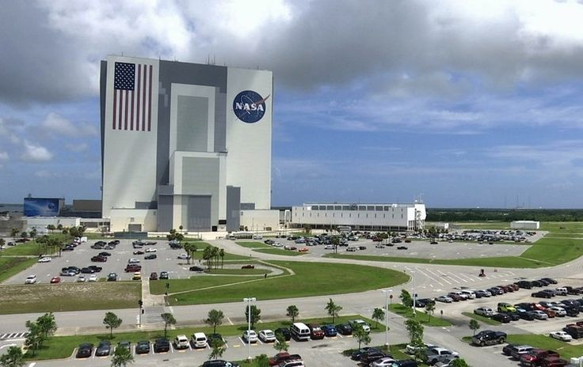
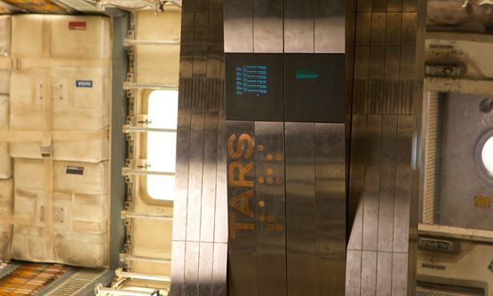

Curiosidades
1 - Representação mais correta no cinema de um buraco negro.
Chamado de Gargantua, o buraco negro de Interestelar é a representação mais fiel de um buraco
negro nos cinemas, foi criado com o
auxílio de um físico teórico, especialista em buracos negros chamado
Kip Thorne, já que o filme já retratava a questão da relatividade de
Einstein.

2 - Nolan solicitou Hans Zimmer para compor a trilha sonora, mas não deu detalhes da trama.
Hans Zimmer, criador da trilha sonora de Interestelar, que foi indicada ao Oscar, não sabia da trama que
o filme tinha, tendo recebido
apenas uma carta do diretor do filme Christopher Nolan detalhando como a trilha
sonora deveria ser.

3 - Algumas cenas do filme precisam de 100 horas para serem renderizadas.
Sim, você não ouviu errado, o filme Interestelar tem cenas que precisam de 100 horas para serem totalmente renderizadas, pois alguns
efeitos especiais precisam muita complexidade para serem o mais verídico possível, inclusive
a cena do buraco negro é uma delas.

4 - As tempestades de poeira foram feitas utilizando papelão biodegradável.
O efeito da tempestade de poeira no filme foram feitas com papelão biodegradável, isso foi afirmado pela própria atriz do filme que
interpreta Murphy Cooper, a filha do protagonista do filme Cooper.
5 - Anne Hathaway quase sofreu Hipotermia nas filmagens do filme.
Durante as filmagens feitas na Islândia Anne Hathaway chegou a quase sofrer uma hipotermia após passar horas na água fria com um traje
de astronauta que não vedava totalmente.
6 - A NASA e cientistas renomados ajudaram na produção do longa.
Para deixar o filme ainda mais realista, Christopher Nolan visitou a NASA para realizar pesquisas, além de vistar a base espacial de Elon Musk.
7 - Naves espaciais foram criadas em escala real.
Outro fator que fez o filme ainda mais realista, foi que as naves usadas no filme foram feitas em miniatura, o modelo de nave Endurance foi feito para que respeitasse as leis da física.

8 - A cena do milharal foi realmente filmada em uma plantação de milho na vida real.
Ao contrário do que muitas pessoas pensam, a cena do milharal onde cooper passa com o carro não foi feita usando efeitos especiais, a cena realmente foi gravada em um milharal. Além disso, o milharal usado no filme foi plantado pelo próprio diretor do filme que se disponibilizou para fazer uma plantação real, após as gravações, o milho foi comercializado.

9- Boa parte dos robôs do filme não tiveram CGI.
Nolan não costuma usar CGI em seus filmes, os robôs de Interestelar são um exemplo. A maior parte das cenas com robôs não precisou de CGI.
10 - Steven Spielberg iria ser o diretor da obra.
Steven Spielberg foi quem iniciou o projeto por volta do ano de 2006, junto da Paramont Pictures Johanatan Nolan, irmão de Christopher Nolan originalmente iria ser o roteirista do filme. No entanto quando a Dream Works que fazia parte da Paramount foi vendida para a Gysney, os diretores foram trocados e Johnatan indicou seu irmão Christopher Nolan a conduzir o filme.